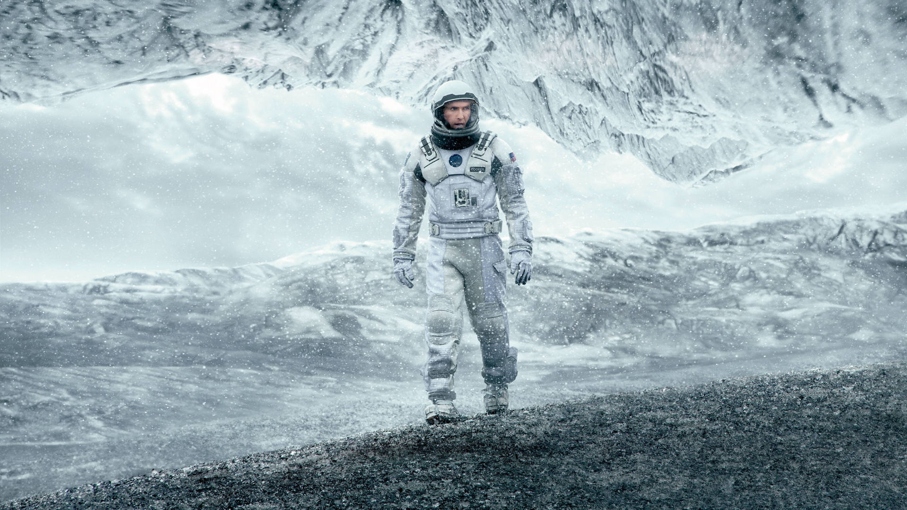

Список фильмов:
Начало (Inception)
«Начало» — научно-фантастический триллер о группе людей, которые проникают в сны других для внедрения идей. Главный герой Дом Кобб — талантливый вор, специализирующийся на извлечении информации из подсознания, сталкивается с самым сложным заданием в своей карьере.


| Год | Страна | Жанр | Режиссер |
|---|---|---|---|
| 2010 | США, Великобритания | Научная фантастика, триллер | Кристофер Нолан |
Матрица (The Matrix)
«Матрица» — культовый фильм, рассказывающий о мире, где реальность является иллюзией, созданной искусственным интеллектом, а люди живут в виртуальной реальности. Главный герой, Нео, осознает эту правду и вступает в борьбу против машин.

| Год | Страна | Жанр | Режиссеры |
|---|---|---|---|
| 1999 | США, Австралия | Научная фантастика, боевик | Вачовски |
Интерстеллар (Interstellar)
«Интерстеллар» — научно-фантастический фильм о поиске нового дома для человечества за пределами Земли. Группа астронавтов отправляется через червоточину в другой галактике, чтобы найти пригодные для жизни планеты.
| Год | Страна | Жанр | Режиссер |
|---|---|---|---|
| 2014 | США, Великобритания | Научная фантастика, драма | Кристофер Нолан |